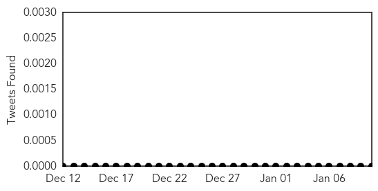
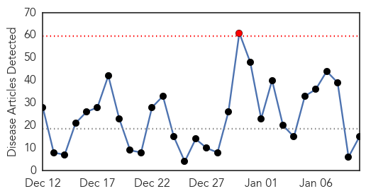

Measles
30-Day Web Trend
3 alerts, 3 warnings

30-Day Twitter Trend
0 alerts, 0 warnings

Article Locations

Article Confidences

Top Articles:
- 0.986
- While recent reports of possible measles in Wayne proved unfounded, disease remains a danger
- 0.950
- Measles Are One Souvenir You Can Now Get at Disneyland
- 0.934
- 5 new measles cases reported with ties to Disneyland
- 0.901
- Disneyland Visitors Measles Outbreak Spreads
- 0.891
- 19 Measles Cases in U.S. Linked to Disney Theme Parks
- 0.879
- CARRIER OF MEASLES TRAVELED THROUGH SEA-TAC AIRPORT TO PUGET SOUND
Unvaccinated persons may have been exposed - 0.853
- Disneyland measles outbreak: Orange County case total at 8, Washington State issues warning
- 0.844
- Snohomish Times Newspaper: Measles: Person traveled through Sea-Tac Airport to Puget Sound
- 0.833
- Woman Contagious With Measles Spent 6 Hours Visiting At Everett Nursing Home
- 0.814
- Disneyland measles outbreak grows, sparks concern
- 0.661
- 19 Contract Measles While At Park Within Last Month
Top Tweets:
-
No tweets found for Jan 10, 2015
Influenza
30-Day Web Trend
1 alerts, 0 warnings

30-Day Twitter Trend
0 alerts, 0 warnings

Article Locations

Article Confidences

Top Articles:
- 1.000
- Flu cases start mounting on Peninsula, especially at Olympic Medical Center -- Port Angeles Port Townsend Sequim Forks Jefferson County Clallam County Olympic Peninsula Daily news
- 1.000
- Flu reaches epidemic levels in Siouxland
- 0.999
- Flu deaths in Georgia on the rise
- 0.999
- Influenza Striking Hard in Sioux Falls
- 0.996
- Flu Cases Have Reached Epidemic Levels
- 0.996
- Beat the Flu with Tamiflu and Other Antiviral Drugs
- 0.993
- U.S. official urges use of antivirals to fight 'bad' flu season
- 0.989
- What Doctors Know: Why does your child need a flu shot?
- 0.987
- Taiwan officially enters flu ...｜Society｜WCT
- 0.983
- From an uncertain process of guesses and science, each year’s flu vaccines emerge
- 0.966
- Hotel-Dieu Grace Healthcare clears two suspected flu cases, confirms one
- 0.963
- Seminole County schools fight flu with shots, germ lessons
- 0.945
- Delaware Reports Five Additional Flu Deaths
- 0.897
- Montreal public health battles high number of flu cases with clinics
- 0.579
- DeLauro to get flu shot, urges all CT residents to do the same
Top Tweets:
-
No tweets found for Jan 10, 2015